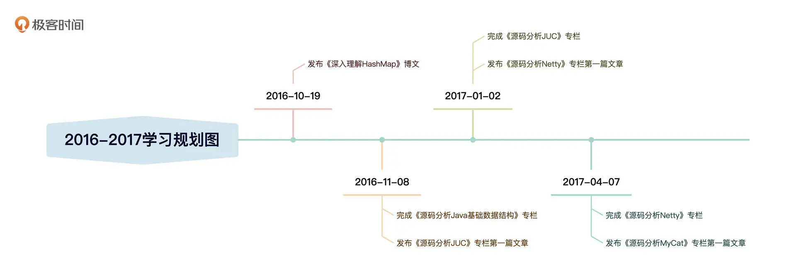
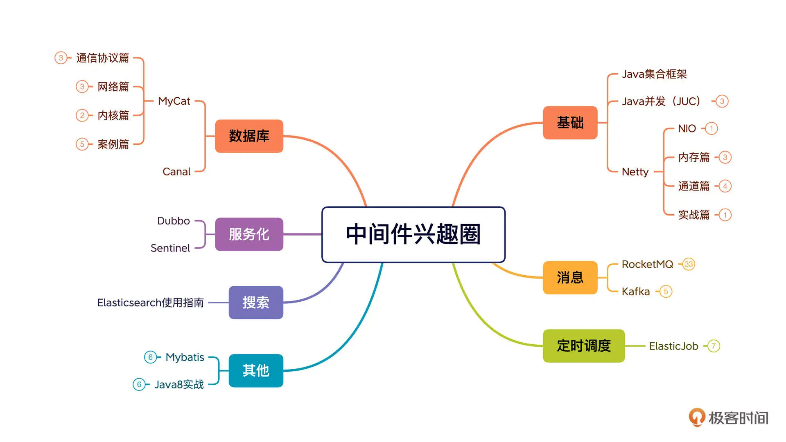

- 00 开篇词 为什么中间件对分布式架构体系来说这么重要？.md
- 01 中间件生态（上）：有哪些类型的中间件？.md
- 02 中间件生态（下）：同类型的中间件如何进行选型？.md
- 03 数组与链表：存储设计的基石有哪些？.md
- 04 红黑树：图解红黑树的构造过程与应用场景.md
- 05 多线程：多线程编程有哪些常见的设计模式？.md
- 06 锁：如何理解锁的同步阻塞队列与条件队列？.md
- 07 NIO：手撸一个简易的主从多Reactor线程模型.md
- 08 Netty：如何优雅地处理网络读写，制定网络通信协议？.md
- 08 加餐 中间件底层的通用设计理念.md
- 09 技术选型：如何选择微服务框架和注册中心？.md
- 10 设计原理：Dubbo核心设计原理剖析.md
- 11 案例：如何基于Dubbo进行网关设计？.md
- 12 案例：如何实现蓝绿发布？.md
- 13 技术选型：如何根据应用场景选择合适的消息中间件？.md
- 14 性能之道：RocketMQ与Kafka高性能设计对比.md
- 15 案例：消息中间件如何实现蓝绿？.md
- 16 案例：如何提升RocketMQ顺序消费性能？.md
- 17 运维：如何运维日均亿级的消息集群？.md
- 18 案例：如何排查RocketMQ消息发送超时故障？.md
- 19 案例：如何排查RocketMQ消息消费积压问题？.md
- 20 技术选型：分布式定时调度框架的功能和未来.md
- 21 设计理念：如何基于ZooKeeper设计准实时架构？.md
- 22 案例：使用分布式调度框架该考虑哪些问题？.md
- 23 案例：如何在生产环境进行全链路压测？.md
- 大咖助阵 高楼：我们应该如何学习中间件？.md
- 用户故事 学而时习之，不亦乐乎.md
- 用户故事 愿做技术的追梦人.md
- 用户故事 浪费时间也是为了珍惜时间.md
- 结束语 坚持不懈，越努力越幸运.md
结束语 坚持不懈，越努力越幸运
你好，我是丁威。
不知不觉，我们已经一起学完了专栏的所有内容。虽然学习的步伐远没有结束，但我们却是时候说再见了。今天这最后一节课，我想结合我的一些从业经验，分享我的一些职场感悟。
我是多数普通开发者的一个缩影
其实，那些业界的“大神”终究只是少数，我想，绝大多数的开发者都没有那么多光环。
十年前，我只是一名普通二类本科的毕业生，毕业后在一家小公司一呆就是四年。我当时主要从事的是电子政务方面的业务，虽然我很努力，解决工作中的问题也显得得心应手，受到了同事和领导们的认可。但受到所在平台和公司规模的限制，我的薪资待遇并不理想，技术水平似乎也在原地踏步。这样一来，我就有了离开的想法。
但我始料未及的是，我满怀信心地出去找工作，却备受打击地回来了。阿里系企业问的很多问题直接把我秒杀。比如：HashMap 的内存结构是什么？HashMap 为什么不是线程安全的？对大数据、高并发这些场景有多少了解？很多问题都是我连想都没有想到过的。
我才发现，在我职业生涯的前 6 年压根就没有机会接触高并发、大数据等技术场景，这导致我的求职屡屡碰壁。
2015 年，随着“互联网 +”理念的兴起，很多传统公司开始了 IT 信息化改造。部分拥有互联网经验的人才流入了传统行业，我也乘着这股浪潮入职了雅居乐地产公司的科技信息中心，参与了雅居乐地产智慧物业相关系统从 0 到 1 的系统的打造。
尽管“互联网 +”相关企业的并发量依然不高，但它们的技术架构、技术思想都借鉴了互联网企业，让我在一定程度上开了眼界，我的职业前景开始有些明朗了。
研究源码，打造技术影响力
在雅居乐地产公司任职期间，我们部门的首席架构师看中了我的技术热情和技术能力，询问我是否愿意参加 MyCat 开源社区，为 MyCat 开源社区贡献自己的一份力量。
说实话，当时我根本没意识到，这样一件事会给我的职业生涯带来前所未有的助力，当时我只是觉得有一个技术大牛认可你，那就无需想太多，直接干就对了。
我仔细研读了 MyCat 的官方文档，逐渐对分库分表中间件的工作原理有了一些较为深入的了解和思考，很快就开始在 MyCat 官方群中回答群友们的问题。
但我意识到，要代表 MyCat 官方社区为企业做一些 MyCat 咨询相关的工作，只看官方文档是不够的。这时候我们还需要阅读源码，理解中间件底层的实现细节，为开源社区编写更多更细的文档。也就是说，必须从一个文档使用者转为一个文档创造者。
于是我做出了一个非常重要的决定：阅读 MyCat 项目源码。不过，刚开始阅读 MyCat 源码的时候我还是举步维艰。这么大一个工程，我完全不知道如何下手。像无头苍蝇乱撞了两周之后，就有些坚持不下去了。
但我并没有彻底放弃，而是意识到自己确实是一个“技术菜鸟”，Java 基础薄弱，必须补齐。
我分析了一下各类主流的分布式架构，决定先研读 Java 基础数据结构、JUC（Java 并发框架）和 Netty（NIO 框架，网络通信基础框架）。
你可以看一下我的学习时间轴：

2016 年 10 月，我开始学习 Java 数据结构，学习的过程中，我会把知识点和自己的思考记录下来。到 2017 年 4 月，我完成了分析 Netty 源码的专栏。整个基础学习阶段大概持续了半年。这之后，我再次尝试阅读 MyCat 源码已经没有任何阻力了，于是接下来我又发表了《源码分析 MyCat》系列文章。
发布《源码分析 MyCat》专栏之后，我在 MyCat 开源社区的知名度越来越大。后来，在 MyCat 开源社区的引荐下，2017 年 11 月，我入职了上海优速物流公司，这也终于给了我在生产环境中处理高并发、大数据量的机会，我开始正式接触互联网分布式架构，薪酬也直接翻倍了。
为什么学完基础知识再读 MyCat 源码就这么轻松了呢？我想主要有下面两方面原因。
基础技能逐渐提升，知识盲区渐渐补齐。
过往的源码学习经验让我总结提炼出了一套适合自己的源码学习方法论。
我也把这套阅读源码的方法分享给你。
- 了解这款软件的使用场景、以及它在架构设计中将承担的责任。
- 寻找官方文档，从整体上把握这款软件的设计理念。
- 搭建自己的开发调试环境，运行官方提供的 Demo 示例，为后续深入研究打下基础。
- 先研究主干流程再专注分支流程，注意切割，逐个击破。
坚持不懈，越努力越幸运
回顾这段经历，我觉得最难能可贵的是坚持。因为阅读源码是非常枯燥的，这半年中我遇到了无数难题，有很多次想要放弃。
我记得有一次我阅读 Netty 源码，当时刚刚写完 Netty 的内存泄露检测，准备开始研究内存分配机制。但这部分非常抽象，涉及到的数据结构特别复杂，需要掌握二叉树与数组之间如何映射，还牵扯到大量的位运算。这让我在探究 Netty 内存分配机制时寸步难行。
当连着一周、两周都无法取得突破时，我们很容易为自己找一个借口：这样持续投入时间，又没有进展，也没有回报，这不是在浪费时间吗？
当时我确实想过放弃。但转念一想，放弃后我会做什么呢？玩游戏？看电视？这不更是浪费时间吗？想清楚这一层后，继续攻关、突破就成了我唯一的选择。
每攻克一个难题，我都能得到极大的满足，技术攻关能力也越来越强。
我接连发布了 RocketMQ、Kafka、ElasticJob、Dubbo、Sentinel、MyBatis、Canal 等源码分析专栏，形成了较为完备的中间件知识体系（如果你想要获取这些源码分析专栏，可以关注“中间件兴趣圈”公众号，回复对应的关键字即可，例如回复 RocketMQ 即可获取 RocketMQ 专栏系列文章）：

在这个过程中，又发生了一件我意料不到的事情，出版社邀请我出版一本书。
写书，这是我连想都不敢想的事情。因为我高中阶段的语文成绩一直在及格线徘徊。但在编辑老师的帮助下，《RocketMQ 技术内幕》一出版就受到了大家的认可。
这本书也逐渐打开了我的知名度，让我顺利进入物流行业的头部企业中通快递担任资深架构师。这份工作需要负责日均消息流转量超万亿级别的集群，让我能够将理论与实践相结合，极大提升了我对消息中间件的理解和把控能力。
回首这些年的工作经历，正是坚持不懈的努力让我获得了今天的成绩。反过来，也正是我收获的这些正向反馈让我有了持续学习的动力，让我坚定地拥抱开源，走技术分享的道路。不要怀疑，越努力真的会越幸运。
中间件研发的两条技术成长路线
不过也许你会问：你对 RocketMQ 这么熟悉，为什么没有成为 RocketMQ 的 Committer 呢，为什么没有参与 RocketMQ 的代码贡献呢？
要回答这个问题，我们要先理清中间件研发的两条技术成长路线。
第一条路线：成为开源项目的创造者，也就是走代码贡献路线，成为开源项目的 Committer。
中间件的细分领域非常多，例如微服务、消息中间件、缓存、搜索、数据库分库分表等。而选择成为 Commiter，通常意味着需要选择其中一个方向深耕。这样做的难度一般会比较高，但一旦取得突破，成为这方面的专家，在行业中的地位就会比较稳固，薪资待遇当然也不会差。
但这条路的缺点是职位选择范围会越来越窄，也就是宽度不够。一旦无法突围，失败的概率就会比较大，毕竟这类工作的岗位需求量还是比较少的。
第二条路线：专注于中间件的应用，成为中间件领域的应用专家、技术架构师。
我选择的是这第二条路线。要实现这个目标，通常的做法就是学习市面上主流的中间件，深入研究各个中间件的源码，深入理解设计者的架构思想，在生产环境中灵活运用各类中间件解决实际业务问题，并且能利用中间件及时规避故障，快速排查故障。
这有助于我们成为多个中间件的技术应用专家。与此同时，研究中间件的实现细节也能帮助我们理解分布式架构，为我们成为技术架构师储备知识。不过，选择了宽度自然容易丧失深度，让人缺乏亮眼的标签。所以我的建议是，达到一定广度后，还是要选择一两个中间件重点攻破，形成自己的金刚钻。
总之，不管是想要走代码贡献的道路，还是专注于中间件的应用，都需要我们的努力和持续的输出。相信我们只要坚持不懈，积极分享，一定可以突破职场瓶颈，拥有自己的社区影响力。我们一起加油！
© 2019 - 2023 Liangliang Lee. Powered by gin and hexo-theme-book.